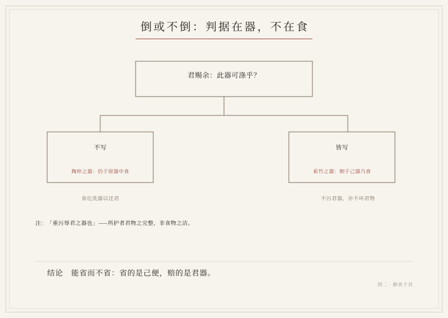

曲礼上 · 一·七十九 · 第 77 课
御食于君，是劝侑君食，非侍食。君食毕，以其余赐，受赐者吃这剩食时有一讲究：可洗涤的器皿，就在原器中吃；不可洗涤的，须倒到自己的器里再吃。
说什么事：御食于君，君赐余，器之溉者不写，其余皆写。
落在哪一层：仪。所护者，君之器。
为何编在此位：上节讲君前受果之细，此节讲君赐余食之处置，皆受赐之事。
【经】御食於君，君賜餘，器之溉者不寫，其餘皆寫。
【注】重污辱君之器也。溉謂陶梓之器，不溉謂萑竹之器也。寫者，傳己器中乃食之也。勸侑曰御。
御 注「劝侑曰御」；疏「御者非侍者，但是劝侑君食也」。御不是贴身侍奉，是劝君多食。
赐余 疏「君食竟，以食残余赐御者也」。
溉 疏「溉，涤也」。可洗涤。
写 疏「写谓倒传之也」。把食物倒到另一器里。
陶梓之器 注。疏：陶是瓦甒之属，梓是杯杅之属，并可涤洁。何胤云「梓，漆也」。
萑竹之器 注。疏：萑，苇也；竹，织竹为之器，并谓筐筥之属，不可澡洁。
劝侑君食，君吃罢把剩下的赐下。所赐之器可以洗涤的，就把食物留在原器中吃；不可洗涤的，都倒到自己的器里再吃。
一节讲一个动作：倒或不倒。判据不在食物，在器。器可洗，则食毕洗器还君，无损；器不可洗，则食物久浸必污其器，器既污又不可洗，就是把君之物弄坏了。
第一层 所重者君之器 注劈头一句「重污辱君之器也」。礼在这里护的不是食物的洁，是君物的完整。
第二层 可洗与不可洗 陶、梓可涤，萑、竹不可涤。同一件「赐」，处置随器之性而异。礼有定则，而无定法。
第三层 写之为敬 倒器是多一道麻烦。能省而不省，是因为省下来的是自己的方便，赔进去的是君之器。
第四层 御与侍之别 疏明「御者非侍者」。侍是近身执役，御是劝侑。名不同，则礼不同。
与今日何干 借人之器用食，用完洗净归还；人家的是不能洗的竹木家什，就别把汤汁直接倒进去。此节之今形。
| 左 | 右 |
|---|---|
| 御食于君 | 劝侑君食，非近身侍奉 |
| 君赐余 | 君食竟，以残余赐 |
| 器之溉者 | 陶梓之器，可涤 |
| 不写 | 仍于原器中食，食讫洗器还君 |
| 其余皆写 | 萑竹之器不可涤，倒于己器 |
| 重污辱君之器 | 所护者君物之完整 |
画案上两器并列：左为一只陶簋，器中余食尚存、器身有洗过的水痕；右为一竹筐，筐中食物已被倒出，筐底干净、竹纹清晰。两器之间有一只空着的己器（素陶小盆）承接。不画人、不写文字。赭色只在陶簋一道弦纹。
